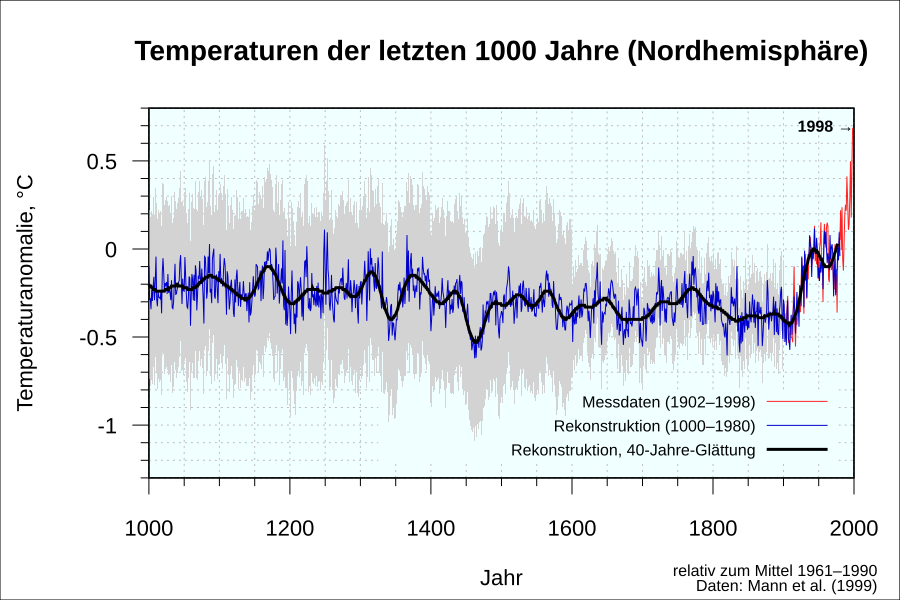

Introdução ao Jornalismo de Dados
Aos alunos do curso de graduação em Jornalismo da UFSC

Galeno Lima, Jornalista (UFSC)
@OneLag • Analista de Dados,
Business Intelligence e Social Listening.
Foi trainee na Folha (2014), Editora Abril (2016) e
Estadão (2017). Trabalhou no Estadão entre 2018 e 2021, como Analista de BI e dados de audiência, e na
TV Record em 2022/2023 como Especialista em Web Analytics. Já trabalhou com Social Listening (Vale, HBO
Max) e desde 2023 atua como Analista de Dados (Colgate, Itaú, BMW).
Quando começou o Jornalismo de Dados?
A primeira matéria de dados, sobre Educação, foi publicada pelo The Guardian em 5 de maio de 1821
Reportagem assistida por computador
O primeiro uso de RAC foi feito pela televisão CBS nos EUA em 1952, para prever o vencedor nas eleições presidenciais.
Jornalismo de Precisão
Livros publicados em 1973 e 1991 por Philip Meyer, reúnem métodos das ciências sociais aplicados ao jornalismo a partir da perspectiva de um repórter.
Jornalismo de Dados
Banda larga, alto poder computacional, grandes bases de dados, reportagens multimídia, equipes multidisciplinares e núcleos especializados.
Dados podem ser classificados por tipo de armazenamento
Todos os dias, bilhões de registros públicos são gerados. Quem lhes dará sentido?
Dados Não Estruturados
Textos livres, e-mails, imagens, gravações de áudio e PDFs digitalizados. Não possuem formato tabular rígido e demandam técnicas como OCR e NLP para extração.
Dados Semiestruturados
Formatos como JSON, XML e páginas HTML. Contêm marcadores, tags e hierarquias que organizam o conteúdo, mas sem a rigidez de um esquema de tabela relacional.
Dados Estruturados
Planilhas em CSV, Excel e tabelas em bancos SQL. Registros perfeitamente organizados em linhas e colunas com tipos definidos, prontos para filtragem e análise.
Dados podem ser classificados por tipo de conteúdo
A natureza da variável define quais perguntas, cálculos e gráficos são adequados
Qualitativos / Categóricos
Descrevem atributos, qualidades ou categorias não métricas:
- Nominais: Categorias sem ordem intrínseca (ex: partido político, gênero, tipo de crime, UF).
- Ordinais: Categorias com hierarquia ou ordenação (ex: escolaridade, faixa etária, patente militar).
Quantitativos / Numéricos
Expressam quantidades e grandezas matemáticas mensuráveis:
- Discretos: Contagens em valores inteiros (ex: número de leitos, total de funcionários, votos).
- Contínuos: Medidas em escala contínua com decimais (ex: salário em R$, inflação %, área em km²).
Dados podem ser classificados por tipo de escala
1. Escala Nominal
Apenas rotula e categoriza sem ordem ou valor numérico.
Operações: Moda e contagem de frequências (ex: sexo, partido, UF).
2. Escala Ordinal
Estabelece ranking e hierarquia, mas sem distância uniforme.
Operações: Mediana e percentis (ex: escolaridade, pódio, escala Likert).
3. Escala Intervalar
Distâncias iguais entre pontos, mas com zero relativo/arbitrário.
Operações: Média e desvio-padrão (ex: temperatura em °C, ano civil, QI).
4. Escala de Razão
Possui zero absoluto (ausência real), permitindo razões e proporções.
Operações: Todas as estatísticas (ex: salário em R$, idade, peso, votos).
Da "Declaração" à Evidência Factual
Como o dado muda a relação de força entre o jornalista e a fonte oficial
❌ O Jornalismo Declaratório
"O governo diz que reduziu as filas em 40%, mas a oposição alega que o sistema piorou."
O leitor fica no escuro, ouvindo duas versões sem verificação independente.
✅ O Jornalismo de Dados
"Análise de 1,2 milhão de prontuários via LAI revela que o tempo médio de espera subiu de 14 para 38 dias."
A reportagem apresenta fatos auditáveis e confronta discursos com números reais.
Grandes Marcos Internacionais
Investigações globais que remodelaram a história através de dados
Panama Papers (ICIJ)
11,5 milhões de documentos vazados de paraísos fiscais analisados por mais de 370 jornalistas em 76 países simultaneamente.
Spotlight (Boston Globe)
Construção manual de bancos de dados cruzando transferências de padres e registros eclesiásticos para provar acobertamento sistêmico.
The Migrants Files
Consórcio europeu que unificou dados fragmentados para mensurar pela primeira vez o número de mortes de refugiados no Mediterrâneo.
O Ecossistema Brasileiro de Dados
Projetos nacionais que são referência mundial em jornalismo computacional
Operação Serenata de Amor
A robô Rosie analisa reembolsos da Cota Parlamentar no Congresso e detecta despesas suspeitas automaticamente.
Nexo & Volt Data Lab
Pioneirismo em infografia interativa, jornalismo explicativo e cobertura baseada em microdados públicos.
G1, Intercept & Agência Pública
Cruzamento sistemático de licitações, dados ambientais (DETER/INPE) e contratos de desmatamento na Amazônia.
Lição Central do Capítulo 1
Jornalismo de dados não é criar painéis, não basta obter os dados. É preciso encontrar o lead através de uma análise exploratória e criar um storytelling.
👉 Pressione a tecla DIREITA (➡️) para iniciar o Capítulo 2: Visualização de Dados & Storytelling Visual
Visualização de Dados & Storytelling Visual
Como transformar descobertas numéricas em narrativas visuais claras e inesquecíveis
As primeiras visualizações de dados: O Mapa da Cólera de John Snow (1854)
📍 Mapeamento por Endereço
John Snow marcou cada vítima com barras pretas no mapa do Soho, criando o primeiro mapa de pontos investigativo.
🚰 O Epicentro da Broad Street
A concentração visual revelou que as mortes orbitavam uma bomba d'água contaminada. A remoção da alavanca encerrou o surto.
💡 O Fim dos "Miasmas"
A evidência visual derrotou a crença de contágio pelo ar e provou a transmissão hídrica, fundando a análise geoespacial.
As primeiras visualizações de dados: O Diagrama de Florence Nightingale (1858)
As primeiras visualizações de dados: O Mapa de Minard (1869)
A campanha catastrófica de Napoleão na Rússia (1812) integrando 6 variáveis em um único gráfico

Visualizações Marcantes: The Hockey Stick Graph (1999)
A reconstrução climática de Mann, Bradley & Hughes que mudou o consenso sobre o aquecimento global

🏒 O Formato em Taco de Hóquei
900 anos de estabilidade relativa (o cabo) seguidos de elevação vertical abrupta no século XX.
🌲 Dados Paleoclimáticos
Combinação de anéis de árvores, testemunhos de gelo e corais com medições por termômetros modernos.
🌍 Consenso & Metas Globais
O gráfico que fundamentou o consenso científico e as políticas climáticas mundiais do IPCC.
Visualizações Marcantes: O Gráfico de Bolhas de Hans Rosling
Visualizações Marcantes: Warming Stripes (2019)
Como o climatologista Ed Hawkins transformou 170 anos de aquecimento global em um manifesto visual sem números
🎨 Minimalismo Radical Sem Eixos
Sem números, escalas ou texto: apenas faixas verticais cronológicas (1850–2018) do azul frio ao vermelho incandescente.
📰 Capa Histórica da The Economist
Pela 1ª vez em 176 anos, a revista dedicou 100% de uma edição a um só assunto: "The climate issue" (set/2019).
🇧🇷 #ShowYourStripes no Brasil
O projeto aberto permite a qualquer repórter baixar e analisar as faixas de seu próprio país, estado ou bioma para pautar matérias.
Síntese do Storytelling Visual
🎨 Princípio de Alberto Cairo:
"Um bom gráfico de dados não é aquele que é apenas bonito, mas aquele que torna visível a estrutura invisível da verdade."
👉 Pressione a tecla DIREITA (➡️) para iniciar o Capítulo 3: Grandes Reportagens & Casos Marcantes
Grandes Reportagens & Casos Marcantes
As investigações e narrativas interativas que redefiniram o jornalismo no mundo e no Brasil
Grandes Reportagens: Snow Fall (NYT, 2012)
O divisor de águas do New York Times que inaugurou a era do jornalismo digital multimídia
🏔️ Narrativa Multimídia Total
John Branch entrelaçou texto longo, simulações 3D de relevo, áudios e vídeos que iniciam automaticamente com o scroll.
💡 O Fenômeno "Snowfalling"
O formato foi tão inovador que virou verbo nas redações globais para designar narrativas imersivas orientadas por rolagem.
🏆 Pulitzer & 3,5 Mi de Leitores
Vencedor do Prêmio Pulitzer em 2013, provou que o público lê reportagens longas e profundas na web quando o design é envolvente.
Scrollytelling: A Arte de Narrar com a Rolagem
Conduzindo o leitor passo a passo por gráficos complexos
Rolagem como Controle ↗
À medida que o leitor rola o texto, o gráfico ao fundo se transforma, destaca pontos e dá zoom em detalhes.
The Pudding ↗
Referência em ensaios visuais que transformam dados e narrativas culturais em experiências imersivas premiadas.
The Guardian ↗
Pioneiro em otimizar o scrollytelling multimídia para celulares, combinando áudio ambiente, vídeo e gráficos imersivos.
Investigações Globais: Panama Papers (ICIJ, 2016)
O maior consórcio de jornalismo investigativo e análise de redes da história
📁 11,5 Milhões de Documentos
2,6 TB de dados da Mossack Fonseca analisados colaborativamente por 370 jornalistas de 100 veículos em 76 países.
🕸️ Análise de Grafos (Neo4j)
Cruzamento automatizado de redes para revelar beneficiários finais de offshores ocultos em paraísos fiscais.
💥 Terremoto Político & US$ 1,3 Bi
Renúncia do primeiro-ministro da Islândia, investigações globais e recuperação de mais de US$ 1,36 bilhão em impostos.
Jornalismo de Dados no Brasil: Casos Emblemáticos
Investigações brasileiras de alto impacto público • Clique no card para abrir o projeto
🏛️ Monitor da Violência (2017) ↗
Parceria do G1 com NEV-USP e FBSP para mapear e auditar mortes violentas e feminicídios em tempo real em todos os 26 estados e DF.
🤖 Operação Serenata de Amor (2016) ↗
Uso pioneiro de machine learning (robô Rosie) e dados abertos para auditar reembolsos da Cota Parlamentar (CEAP) na Câmara dos Deputados.
🔍 Projeto Excelências (2006) ↗
Transparência Brasil. Pioneiro no mapeamento da ficha e processos de parlamentares, pilar para a Lei da Ficha Limpa. Prêmio Esso 2006.
💉 Consórcio da Covid (2020) ↗
União histórica de Folha, Estadão, G1, O Globo, Extra e UOL apurando dados direto das secretarias quando o governo ocultou os boletins.
Jornalismo de Dados no Brasil: Investigações Premiadas
🎓 Farra do Fies (2015) ↗
Estadão (Paulo Saldaña, Rodrigo Burgarelli e J. R. de Toledo). Cruzamento do Censo Universitário provando gastos x13 sem aumento de vagas. Prêmio Esso 2015.
📑 Diários Secretos (2010) ↗
Gazeta do Povo (Curitiba). Catalogação e cruzamento de 724 diários ocultos da Alep, revelando desvio de R$ 100 mi e fantasmas. Grande Prêmio Esso 2010.
🦠 No Epicentro (2020) ↗
Lupa/Washington Post (Menegat). Simulador geoespacial que permitia digitar o endereço e visualizar o raio das mortes da Covid ao redor de casa. Sigma Awards / Malofiej.
⚖️ Candidatos com mandado de prisão (2024) ↗
G1 (Judite Cypreste e Camila da Silva). Cruzamento do Banco de Mandados (BNMP/CNJ) com dados do TSE, revelando dezenas de candidatos com prisão ativa. Prêmio Mosca 2024.
Jornalismo Especializado: Mídias Nativas Digitais
💜 Gênero & Número ↗
Mídia digital pioneira no cruzamento de dados sobre direitos humanos, gênero e raça. Reportagem analisando 132 anos de perfil e falta de diversidade no STF.
🌿 Sumaúma ↗
Jornalismo investigativo a partir da floresta. Investigação com dados e cartografia sobre grilagem verde e créditos de carbono em terras indígenas.
🌳 Infoamazônia ↗
Pioneirismo em dados geoespaciais, satélites (DETER/INPE) e mapas investigando desmatamento, queimadas e áreas protegidas sob ataque.
🌍 Ambiental Media ↗
Jornalismo científico e infografia de dados complexos para mapear a pressão da agropecuária e devastação na savana brasileira. Sigma Awards.
Formatos Multimídia: Áudio, Vídeo & Dashboards
Como o jornalismo de dados ganha vida em diferentes formatos sensoriais e interativos
Áudio: Sonificação ↗
Conversão de séries de dados em som e ritmo. O projeto Visualising & Sonifying Seinfeld (Andy Kirk) transforma aparições e diálogos dos episódios em padrões musicais.
Vídeo: Visual Forensics ↗
O NYT Visual Investigations combina metadados de vídeos, câmeras corporais, áudio espacial e modelos 3D para reconstruir fatos frame a frame. Prêmio Pulitzer.
Dashboard: Debates Folha (2024) ↗
Ferramenta interativa da Folha que permite ao leitor filtrar o desempenho de cada candidato: temas falados, tempo de fala, menções e confrontos diretos.
Alfabetização Visual: Open Visualization Academy
A nova plataforma global e gratuita para democratizar a visualização de dados
🎓 A "Khan Academy" dos Gráficos ↗
A Open Visualization Academy (OVA) é uma biblioteca aberta e gratuita com cursos em vídeo, tutoriais e repertório prático sobre design de informação e ética visual para estudantes e jornalistas.
🇪🇸🇧🇷 Alberto Cairo & o Brasil
Criada pelo designer espanhol Alberto Cairo (ex-diretor de infografia da Revista Época / Editora Globo e Knight Chair na Universidade de Miami), autor de obras seminais como The Functional Art e How Charts Lie.
💡 "O objetivo da visualização de dados não é simplificar o complexo até a superficialidade, mas torná-lo compreensível sem perder o rigor."
👉 Pressione a tecla DIREITA (➡️) para iniciar o Capítulo 4: Do PDF às Grandes Bases de Dados
Do PDF às Grandes Bases de Dados
A jornada da informação: de documentos desestruturados e PDFs até repositórios massivos
O Ponto de Partida: O Dado Desestruturado
Grande parte dos vazamentos e documentos oficiais nasce em formatos 'fechados'
PDFs Digitalizados
Documentos que são fotos de páginas impressas (como Diários Oficiais escaneados e processos judiciais), sem texto selecionável.
Tabelas 'Presas'
Relatórios governamentais onde números estão organizados visualmente, mas não permitem somas, filtros ou cálculos computacionais.
Volume & Caos
Investigações que recebem milhares de arquivos desorganizados (ex: CPIs, vazamentos judiciais, contratos públicos em lote).
Estruturação com IA: Google Pinpoint
Como a tecnologia do Google Journalist Studio desbloqueia investigações documentais
🔍 OCR & Pesquisa Semântica ↗
Faça upload de até 200.000 documentos (PDFs, imagens, manuscritos, áudios com transcrição automática). O Pinpoint aplica OCR em alta velocidade e permite busca de termos exatos e sinônimos.
🏷️ Extração de Entidades & Tabelas
A IA identifica automaticamente listas de pessoas, organizações e locais mencionados em milhares de arquivos, facilitando a identificação de redes de corrupção e exportação de tabelas.
O Próximo Passo: Planilhas & Tabelas (CSV/XLSX)
Quando a informação ganha linhas, colunas e capacidade de cálculo
Estrutura Tabular
Cada linha é um registro único (uma compra, um voto, um paciente) e cada coluna é uma variável padronizada.
Fórmulas & Filtros
Permite ordenar, filtrar por data/valor, somar totais, calcular médias e cruzar tabelas através de identificadores (PROCV / JOIN).
Padrão Aberto (CSV)
O formato Comma-Separated Values (.csv) é universal, leve e importável em qualquer ferramenta (Excel, Sheets, Python, R, SQL).
Da Planilha ao Dashboard Interativo
Transformando tabelas estáticas em ferramentas visuais de exploração pública
🎛️ Filtros & Segmentação em Tempo Real
O leitor escolhe seu município, ano ou candidato para ver gráficos e indicadores recalculados instantaneamente.
📈 Visualizações Integradas
Combinação simultânea de mapas coropléticos, séries temporais de linha, barras comparativas e cartões com totais (KPIs).
👥 Empoderamento do Leitor
A reportagem oferece a narrativa central, mas entrega o dashboard para que o público faça suas próprias perguntas e checagens.
🛠️ Ferramentas Populares
Looker Studio (Google), Tableau Public, Power BI, Streamlit, Observable e painéis desenvolvidos sob medida em D3.js.
Grandes Bases Públicas: IBGE, DataSUS & INEP
Os repositórios massivos que revelam a realidade socioeconômica e demográfica do país
🏛️ Censo & SIDRA (IBGE) ↗
Banco com bilhões de dados do Censo Demográfico, PNAD Contínua e PIB. Permite consultar população, renda e saneamento por setor censitário e município.
🏥 DataSUS & TabNet ↗
O sistema de informações de saúde do Brasil: microdados de mortalidade (SIM), nascidos vivos (SINASC), internações hospitalares (SIH) e vacinação nacional.
🎓 Microdados do ENEM & INEP ↗
Dados com cada resposta, redação e perfil socioeconômico dos milhões de participantes do ENEM, além do Censo Escolar sobre a infraestrutura das escolas.
🌐 dados.gov.br ↗
O catálogo oficial de dados abertos do Poder Executivo Federal, indexando milhares de conjuntos de dados de ministérios, agências reguladoras e universidades.
Fiscalização & Big Data: Transparência e Repositórios Unificados
O topo da infraestrutura de dados abertos para o jornalismo investigativo
Portal da Transparência (CGU) ↗
Acompanhamento de cada centavo gasto pela União: cartões corporativos, salários de servidores federais, emendas parlamentares, viagens e contratos públicos em dados abertos.
Base dos Dados (BigQuery / SQL) ↗
Organização sem fins lucrativos que limpa, padroniza e unifica centenas de bases públicas (IBGE, TSE, Receita, DataSUS, RAIS) em uma infraestrutura gratuita em nuvem consultável via SQL, Python e R.
A Escala da Transformação dos Dados
💡 Princípio Fundamental:
"Não importa se a informação começa como um processo escaneado de 500 páginas ou como uma tabela do Censo com 200 milhões de linhas: a habilidade essencial do jornalista de dados é saber em que nível da escala o dado está e qual ferramenta o levará ao próximo patamar."
👉 Pressione a tecla DIREITA (➡️) para iniciar o Capítulo 5: Coleta, Raspagem & Extração de Dados
Coleta, Raspagem & Extração de Dados
Como capturar, desbloquear e estruturar informações espalhadas na web
O Purgatório dos PDFs: Como Libertar Tabelas
O PDF foi criado para impressão no papel, não para análise de dados
Tabula (Software Gratuito)
Interface gráfica simples: selecione a tabela com o mouse sobre o PDF e exporte direto para CSV/Excel em segundos.
pdfplumber / PyPDF (Python)
Bibliotecas programáveis para extrair milhares de páginas de relatórios contábeis e diários oficiais em lote.
Tesseract OCR
Reconhecimento Óptico de Caracteres para quando o PDF é apenas uma foto escaneada de documento impresso.
O que é Web Scraping (Raspagem de Dados)?
Escrever um script que navega em páginas da web e coleta dados automaticamente
1. Requisição HTTP
O script solicita o código HTML da página do mesmo modo que o navegador Chrome faz.
2. Árvore do DOM (HTML)
O robô percorre a estrutura de tags (tabelas, listas, links) identificando onde estão as informações.
3. Seletores CSS / XPath
O script localiza elementos específicos (ex: <span class="valor-contrato">).
4. Gravação Estruturada
As informações de milhares de páginas são gravadas em uma tabela limpa e unificada.
Código Prático de Raspagem em Python
Coletando contratos públicos com poucas linhas de código
import requests
from bs4 import BeautifulSoup
import pandas as pd
# 1. Faz o download do Diário Oficial da Prefeitura
url = "https://transparencia.municipio.sc.gov.br/licitacoes"
response = requests.get(url)
soup = BeautifulSoup(response.text, "html.parser")
# 2. Localiza todas as linhas de contratos na tabela
contratos = []
for linha in soup.select("table#contratos tbody tr"):
colunas = [td.text.strip() for td in linha.find_all("td")]
contratos.append(colunas)
# 3. Converte para tabela e salva em arquivo CSV
df = pd.DataFrame(contratos, columns=["Data", "Empresa", "Objeto", "Valor"])
df.to_csv("contratos_prefeitura_2026.csv", index=False)
O Poder das APIs REST
Quando o próprio órgão público oferece uma porta de entrada direta para dados
API da Câmara dos Deputados
Gastos parlamentares, presença em plenário, discursos e tramitação de projetos em tempo real.
API do IBGE (SIDRA)
Indicadores socioeconômicos, inflação (IPCA), desemprego e projeções populacionais por cidade.
API do Banco Central (SGS)
Taxa Selic, cotação histórica de moedas, endividamento e fluxo de reservas cambiais.
Ética & Boas Práticas do Web Scraping
Como investigar sem derrubar servidores públicos ou violar leis
⏱️ Adicione Pausas (Rate Limiting)
Nunca faça dezenas de requisições por segundo. Coloque time.sleep(1) para respeitar a
capacidade do servidor.
🤖 Identifique seu Script (User-Agent)
Coloque seu contato no cabeçalho da requisição para que a equipe de TI saiba que se trata de apuração de imprensa.
🌙 Raspe Fora do Horário de Pico
Prefira rodar scripts volumosos durante a noite ou aos finais de semana para não atrapalhar o cidadão comum.
💾 Guarde Cópias Fidedignas
Salve a resposta HTML bruta original com data e hora como prova documental para sua reportagem.
Resumo da Coleta de Dados
Agora que temos a base em mãos, começa o maior desafio: o tratamento
💡 Regra de Ouro do Jornalista de Dados:
"Dados brutos obtidos na web quase nunca estão prontos para publicação. Eles vêm cheios de ruídos, fraudes e erros de digitação."
👉 Pressione a tecla DIREITA (➡️) para iniciar o Capítulo 6: Limpeza, Tratamento & Auditoria de Dados
Limpeza, Tratamento & Auditoria de Dados
Onde 80% do trabalho investigativo acontece: da sujeira à verdade auditável
As Maiores Armadilhas em Bases Públicas
O que pode arruinar uma manchete se o repórter não verificar
Erros de Digitação Manual
"Florianopolis", "Floripa", "Florianópolis-SC". Se não padronizar, o agrupamento vai separar a mesma cidade em 3 linhas distintas.
Valores Nulos & Marcadores Falsos
Campos preenchidos com "9999", "N/A" ou "00/00/0000" que distorcem médias e cálculos se interpretados como números reais.
Registros Duplicados
O mesmo contrato ou pagamento lançado duas vezes por falhas de integração no sistema da prefeitura.
OpenRefine: O Canivete Suíço da Limpeza
A ferramenta visual mais eficiente para higienização e agrupamento de dados
🧩 Agrupamento por Similaridade (Clustering)
Algoritmos fonéticos (Metaphone, Levenshtein) encontram nomes digitados de formas diferentes e unificam com um clique.
🔄 Transformações em Lote
Conversão instantânea de formatos de data (ex: DD/MM/AAAA para AAAA-MM-DD), remoção de espaços em branco e acentos.
📜 Histórico Completo de Auditoria
Cada alteração fica gravada em um log JSON reproduzível, permitindo desfazer qualquer passo e anexar a metodologia à matéria.
🌐 Reconciliação com Wikidata
Cruze bases locais com o banco de dados global da Wikimedia para identificar políticos e empresas automaticamente.
Tratamento Avançado com Python & Pandas
Automatizando a limpeza de milhões de registros em frações de segundo
import pandas as pd
# Carrega a base bruta de pagamentos
df = pd.read_csv("pagamentos_saude.csv")
# 1. Padroniza textos e remove espaços extras
df['fornecedor'] = df['fornecedor'].str.upper().str.strip()
# 2. Converte valores monetários ("R$ 1.500,00" -> 1500.00 float)
df['valor'] = df['valor'].str.replace("R$", "").str.replace(".", "").str.replace(",", ".").astype(float)
# 3. Elimina duplicidades exatas de pagamentos
df = df.drop_duplicates(subset=['num_empenho', 'data_pagamento', 'valor'])
print(f"Total auditado: R$ {df['valor'].sum():,.2f}")
Cruzamento de Bases: Onde Surgem os Furos
Conectando bases que as autoridades nunca imaginaram ver juntas
Licitações + Quadro Societário
Cruzamento via CNPJ para descobrir empresas vencedoras pertencentes a parentes de servidores públicos.
Doações Eleitorais + Contratos
Cruzamento de CPFs de doadores de campanha com sócios de empresas que ganharam contratos sem licitação meses depois.
Endereços + Receita Federal
Identificação de dezenas de empresas concorrentes registradas exatamente no mesmo endereço ou sala comercial.
Caçando Outliers (Valores Fora da Curva)
Como identificar desvios estatísticos que apontam para suspeitas reais
📈 Dispersão de Preços Unitários
Um hospital compra caixas de luvas por R$ 25, enquanto outro compra por R$ 380 do mesmo fornecedor na mesma semana.
⏱️ Concentração Temporal Anômala
Dezenas de notas fiscais emitidas no mesmo minuto na virada do exercício fiscal em 31 de dezembro.
🎯 Lei de Benford
Análise da frequência do primeiro dígito em despesas contábeis para detectar números forjados artificialmente.
🗺️ Incoerência Geográfica
Uma empresa de transporte escolar em Santa Catarina prestando serviços para um município no interior do Amazonas.
Auditoria & Reprodutibilidade
🔒 Regra de Proteção Jurídica:
"Se a sua apuração não puder ser reproduzida exatamente por outro repórter rodando o mesmo script nos mesmos dados brutos, a matéria não está pronta para ser publicada."
👉 Pressione a tecla DIREITA (➡️) para iniciar o Capítulo 7: Análise Estatística, Investigação & BI
Análise Estatística, Investigação & BI
Fazendo as perguntas certas aos dados e extraindo inteligência editorial
Estatística Essencial para Jornalistas
Conceitos fundamentais que todo comunicador precisa dominar
Média vs. Mediana
Se 9 pessoas ganham R$ 2.000 e 1 pessoa ganha R$ 1.000.000, a média é R$ 101.800 (ilusória). A mediana é R$ 2.000 (realista).
Taxas por 100 mil habitantes
Comparar números absolutos de homicídios entre São Paulo e Florianópolis é distorcido. Sempre normalize pela população.
% vs. Pontos Percentuais
Se a taxa de juros sobe de 10% para 12%, ela subiu 2 pontos percentuais, mas aumentou 20% no valor.
Correlação Não Implica Causalidade
O maior gerador de desinformação involuntária no jornalismo
❌ A Falácia da Correlação Espúria
O consumo de sorvete e as mortes por afogamento aumentam juntos no verão. O sorvete causa afogamento? Não, o calor causa ambos.
✅ A Postura do Jornalista Investigativo
Identificar se existe uma variável oculta (fator de confusão) e consultar estatísticos e especialistas antes de cravar uma relação de causa e efeito.
Business Intelligence (BI) na Redação
Utilizando ferramentas corporativas para monitorar o poder público continuamente
Dashboards Analíticos
Painéis em Power BI, Looker Studio e Metabase conectados a bases que atualizam matérias automaticamente.
Alertas Automatizados
Notificações automáticas no Slack/Telegram da redação quando uma licitação acima de R$ 5 milhões é publicada.
Filtros Multidimensionais
Navegação intuitiva por partido, estado, fornecedor e ano sem necessidade de rodar código a cada pergunta.
Social Listening & Monitoramento de Redes
Entendendo o ecossistema digital, narrativas e fluxos de opinião pública
🗣️ Análise de Sentimento & Tendências
Mapeamento de picos de conversação, palavras-chave e reações populares em torno de crises e projetos de lei.
🕸️ Mapeamento de Redes & Grafos
Identificação de clusters de perfis inautênticos (bots), contas coordenadas e nós de disseminação de desinformação.
🎯 Monitoramento de Anúncios Políticos
Biblioteca de Anúncios da Meta e Google para rastrear gastos eleitorais e microsegmentação de eleitores.
🛡️ Ética & Amostragem
Compreender que as redes sociais não representam o total da população brasileira, mas nichos específicos engajados.
O Fechamento: Da Planilha ao Confronto Ético
O que fazer após encontrar a anomalia estatística?
1. O Outro Lado Rigoroso
Apresente a tabela exata e os números ao investigado com prazo razoável para resposta antes da publicação.
2. Peer-Review com Especialistas
Peça a um pesquisador ou auditor independente para checar sua metodologia e cálculos matemáticos.
3. O Personagem Humano
Encontre a pessoa real que sofre as consequências do desvio orçamentário para abrir a sua reportagem.
Resumo da Análise de Dados
Torture os dados por tempo suficiente e eles confessarão qualquer coisa. O papel do jornalista é buscar a verdade, não confirmar seus próprios preconceitos.
👉 Pressione a tecla DIREITA (➡️) para iniciar o Capítulo 8: Ética, Futuro com IA & Próximos Passos
Ética, Futuro com IA & Carreira
O horizonte profissional e as fronteiras éticas da nova geração de jornalistas
LGPD & Proteção de Dados Pessoais
O equilíbrio entre o interesse público e o direito à privacidade
Exceção Jornalística na LGPD
O artigo 4º da LGPD resguarda a atividade jornalística, mas exige proporcionalidade e estrito interesse público.
Anonimização de Vulneráveis
Dados de menores de idade, vítimas de violência e prontuários médicos sensíveis nunca devem ser expostos sem anonimização.
Segurança da Informação
Armazenamento de vazamentos em drives criptografados (VeraCrypt) para proteger a identidade de fontes confidenciais.
Inteligência Artificial & LLMs na Apuração
Como usar IA generativa como assistente de apuração com responsabilidade
🤖 Onde a IA Acelera o Trabalho:
- Auxílio na escrita de scripts Python e expressões regulares (Regex).
- Resumo e extração de entidades em PDFs judiciais com centenas de páginas.
- Transcrição automática de entrevistas e áudios de audiências públicas.
⚠️ Riscos Críticos e Limitações:
- Alucinações: Modelos inventam dados e citações inexistentes.
- Viés Algorítmico: Reprodução de preconceitos históricos nos dados de treino.
- Privacidade: Nunca envie dados confidenciais de fontes para ferramentas abertas na nuvem.
Onde Estão as Oportunidades de Carreira?
O perfil híbrido de jornalista de dados é um dos mais valorizados no mercado
Redações e Agências
Núcleos de investigação, infografia interativa, fact-checking (Aos Fatos, Lupa) e coberturas eleitorais.
ONGs & Transparência
Organizações de controle social (Transparência Brasil, Fiquem Sabendo, Open Knowledge Brasil, Imazon).
BI & Inteligência de Mercado
Empresas de análise de dados, consultorias de risco político e social listening estratégico.
Onde Continuar Estudando & Comunidades
Recursos gratuitos e redes de apoio para acelerar seu aprendizado
O jornalismo feito com rigor, dados abertos e paixão pela verdade é o mais poderoso antídoto contra a escuridão e o autoritarismo. Nunca deixem de questionar os números do poder.
Perguntas & Debate Aberto
Apresentação disponível publicamente para todos os alunos
📬 Contatos & Redes
Website: onelag.github.io/datajournalism
Plataforma: onelag.com
GitHub: @OneLag
Email: contact@galenolima.dev
🎯 Navegação da Apresentação
⬅️ ➡️ — Mudar de Capítulo (Horizontal)
⬆️ ⬇️ — Navegar nos Slides (Vertical)
S — Abrir Modo Apresentador com Notas
O ou ESC — Visão Geral em Grade
F — Alternar Tela Cheia